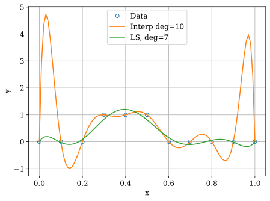

Least squares#
We use interpolation and fitting by polynomial as an example.
%config InlineBackend.figure_format = 'svg'
import numpy as np
import matplotlib.pyplot as plt
Let us generate the data as in the book.
m = 11
x = np.linspace(0.0, 1.0, m)
y = (np.abs(x-0.4) < 0.2)*1.0 + 0.0
plt.plot(x,y,'o')
plt.xlabel("x"); plt.ylabel("y"); plt.grid(True);
Polynomial interpolation#
We solve the matrix problem using numpy.linalg.solve.
A = np.empty((m,m))
for i in range(m):
A[i,:] = x[i]**np.arange(0,m)
cint = np.linalg.solve(A,y)
The following function evaluates the polynomial with coefficients in the array c.
# c = polynomial coefficients, m = len(c)
# Computes degree m-1 polynomial
# y = sum(i=0,m-1) c[i] * x**i
def p(c,x):
m = len(c)
y = 0*x
for i in range(m):
y += c[i] * x**i
return y
Let us plot the polynomial on a finer set of points.
xc = np.linspace(0.0, 1.0, 100)
plt.plot(x,y,'o',label='Data')
plt.plot(xc,p(cint,xc),label='Interp deg='+str(m-1))
plt.xlabel("x"); plt.ylabel("y")
plt.legend()
plt.grid(True)
plt.savefig("sqwave_interp.pdf")
Polynomial least squares fit#
We solve the least squares problem using numpy.linalg.lstsq.
n = 8
A = np.empty((m,n))
for i in range(m):
A[i,:] = x[i]**np.arange(0,n)
cls,res,rank,s = np.linalg.lstsq(A,y,rcond=None)
Let us plot the interpolating and least squares polynomials.
plt.plot(x,y,'o',label='Data')
plt.plot(xc,p(cint,xc),label='Interp deg='+str(m-1))
plt.plot(xc,p(cls,xc),label='LS, deg='+str(n-1))
plt.xlabel("x"); plt.ylabel("y")
plt.legend()
plt.grid(True)
plt.savefig("sqwave_fit.pdf")

Fitting a straight line#
We have some data \((x_i, y_i)\) and we expect a linear relationship between \(x\) and \(y\)
\[
y = c_0 + c_1 x
\]
But the data \(y_i\) possibly has some error.
c0 = 1.0
c1 = 2.0
m = 10
x = np.linspace(0.0, 1.0, m)
yt = c0 + c1 * x
plt.plot(x, yt, '--',label='True')
y = yt + 0.2 * (2 * np.random.rand(m) - 1)
plt.plot(x, y, 'o',label='Data')
plt.legend(); plt.grid(True)
plt.xlabel("x"); plt.ylabel("y");
Let us estimate \(c_0, c_1\) using least squares fitting.
n = 2
A = np.empty((m,n))
A[:,0] = 1.0
A[:,1] = x
c,res,rank,s = np.linalg.lstsq(A,y,rcond=None)
print('c0 = ', c[0])
print('c1 = ', c[1])
c0 = 1.0176685445548257
c1 = 1.9898477996492128
Plot the fitted line and compare with data and true function.
yf = c[0] + c[1] * x
plt.plot(x, yt, '--', label='True')
plt.plot(x, y, 'o',label='Data')
plt.plot(x, yf, '-', label='Fit')
plt.legend(); plt.grid(True)
plt.xlabel("x"); plt.ylabel("y");